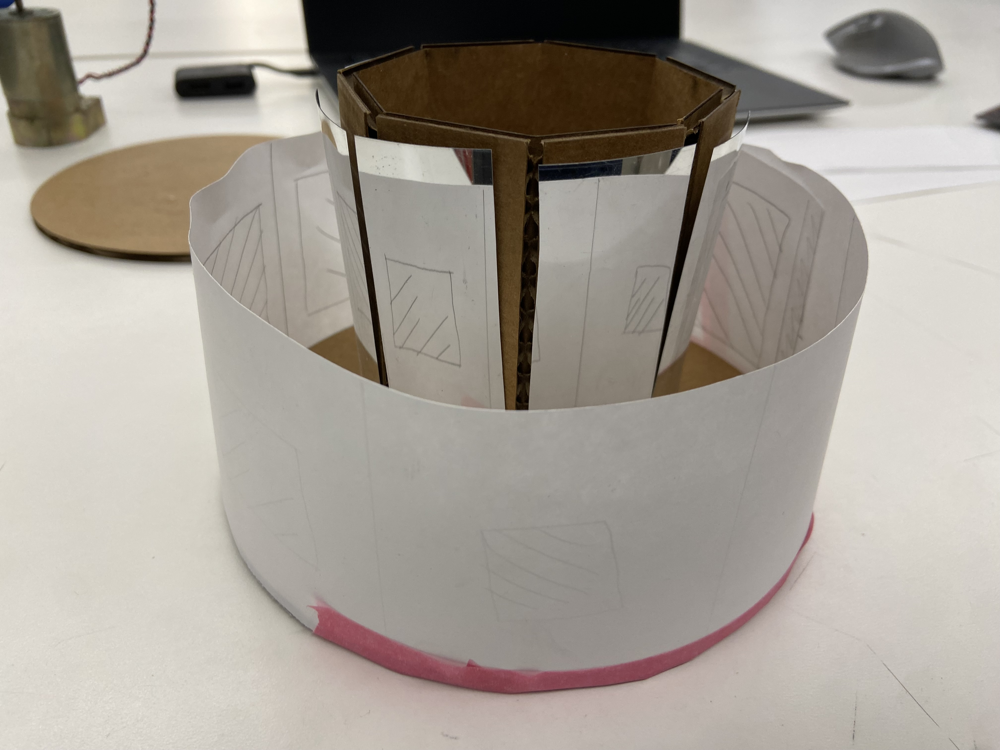
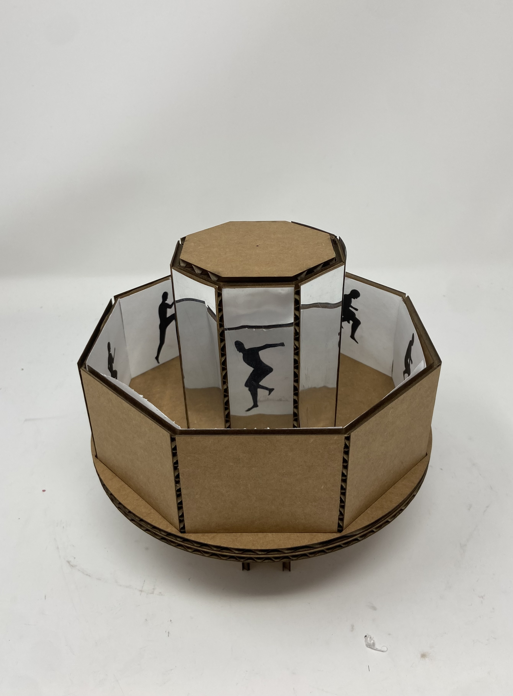
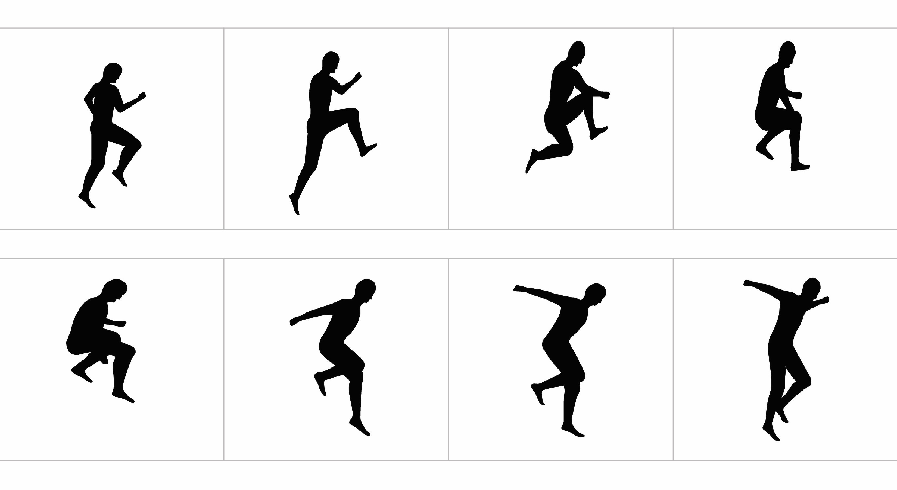
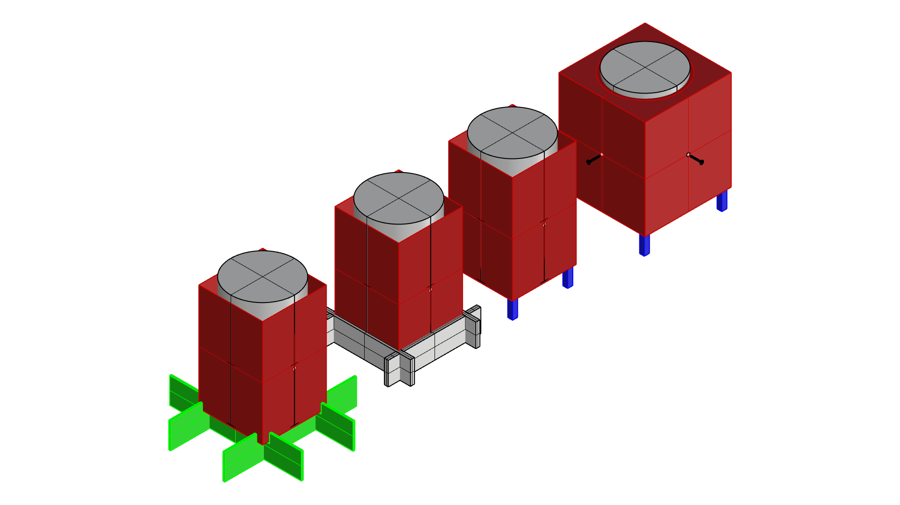
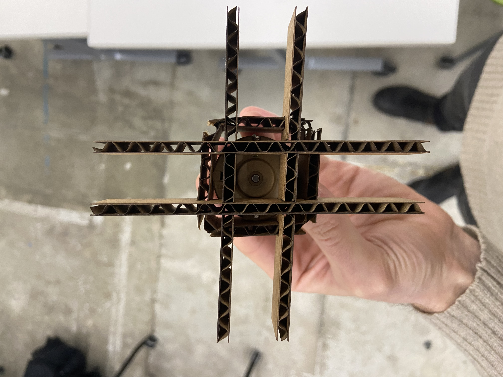
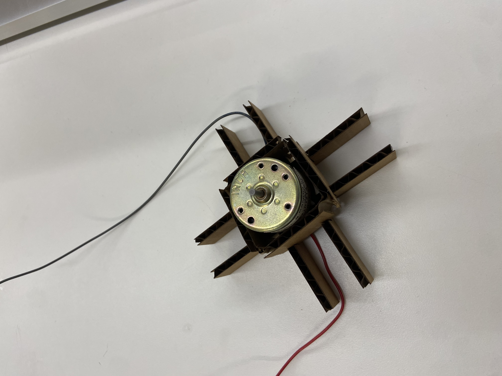
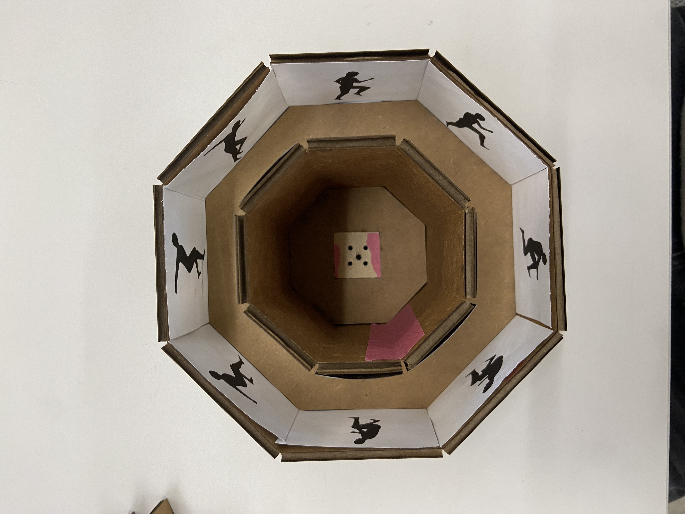
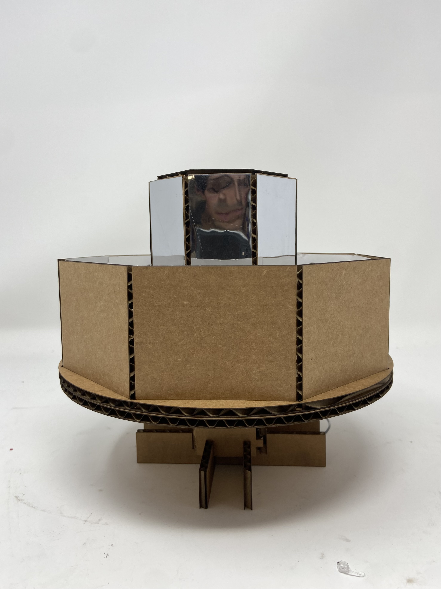
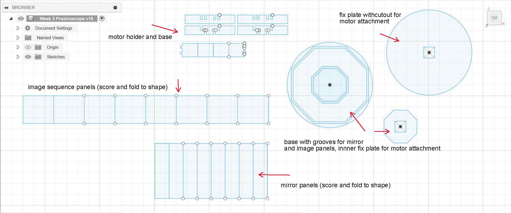

<div class="textcontainer">
<p class="margin"> </p>
<!-- <h3>Week 3: Hand Tools & Fabrication</h3> -->
<!-- <p class="margin"> </p>
<div class="flexrow">
<a id="btn" href="./week3.zip" download>Download my CAD files from this week!
</a>
</div>
<p class="margin"> </p> -->
<h4>Assignment: Create a Kinetic Sculpture</h4>
Since I am planning to build a zoetrope for my final project, this week's opportunity to build a kinetic
sculpture presented a good opportunity to prototype the basic mechanism: a spinning drum that displays a
serial sequence of images. Because the zoetrope may require some complexity with strobe effects, I
chose to build a model of a similar yet simpler device, the [praxinoscope](https://en.wikipedia.org/wiki/Praxinoscope),
that relies on mirrors instead of light to create an illusion of animation.
Since the mechanism would be driven by a DC motor with max 5V power from the Arduino (as we learned in class), I chose
to work with carboard to keep everything lightweight, and figured the majority of the geometry could be laser cut and/or
scored and folded to shape.
I began by prototyping the essential elements, a central column of mirrored panels on a rotatable platform. The praxinoscope requires 1 mirror panel per image/frame in the sequence, and I chose an 8 frame design to keep this small.
I scored 8 panels and folded them into an octagonal column, and inserted some reflective mylar sheet that was lying around the lab. Before getting too deep into the image part, I drew out 8 shapes and taped them around the platform to test basic functionality
<p class="margin"> </p>
<div class="flexrow">

</div>
<p class="caption">Early prototype</p>
The design looked promising so I continued on. I chose a sequence of some stock images from Adobe, and cut/scored
another octagonal shape with panels for each image that would align with the panels on the mirrored column. All coardboard pieces were press fit, and I glued on the reflective film and images.
<p class="margin"> </p>
<div class="flexrow">


</div>
<p class="caption">The stock images I chose for the animation, and the model starting to come together</p>
I then needed a way to both connect my scultpure to the motor, and a way to hold both the motor and the sculpture
upright and in place. I fooled around in Rhino for a while and chose a design for a half lap joint base that would
hold a box surrounding the motor while allowing the wires to come down through the bottom.
<p class="margin"> </p>
<div class="flexrow">



</div>
<p class="caption">Sketches for the motor base, with the final design in green, and then assembled</p>
Lastly, I cut a 1 sq inch piece of plywood that would attach to the motor shaft. I recut the base of the sculpture with the same sized cutout in the center, and an additional "fix plate" that would simply support all pieces of the praxinoscope from underneath.
<p class="margin"> </p>
<div class="flexrow">


</div>
<p class="caption">The mechanism of attaching the motor to the sculpture, and resulting profile view</p>
From there, all I needed to do was hook up the motor to power and let it spin! I soldered wire to the motor's leads,
and plugged in to the Arduino. 5V ended up spinning the sculpture way too fast, but the 3V pin was perfect. Praxinoscope complete!
<p class="margin"> </p>
<div class="flexrow">
<video controls autoplay muted loop
src="./final_vid.mov" alt="video of a praxinoscope spinning" style="width:100%; max-width:500px;">>
</div>
<p class="caption">Final praxinoscope in action</p>
P.S, here's what all the geometry needed for this sculpture looks like in a 2D sketch
<p class="margin"> </p>
<div class="flexrow">

</div>
<p class="caption">Final fusion file with all geometry needed for this project, other than the wood block motor attachment</p>
</div>